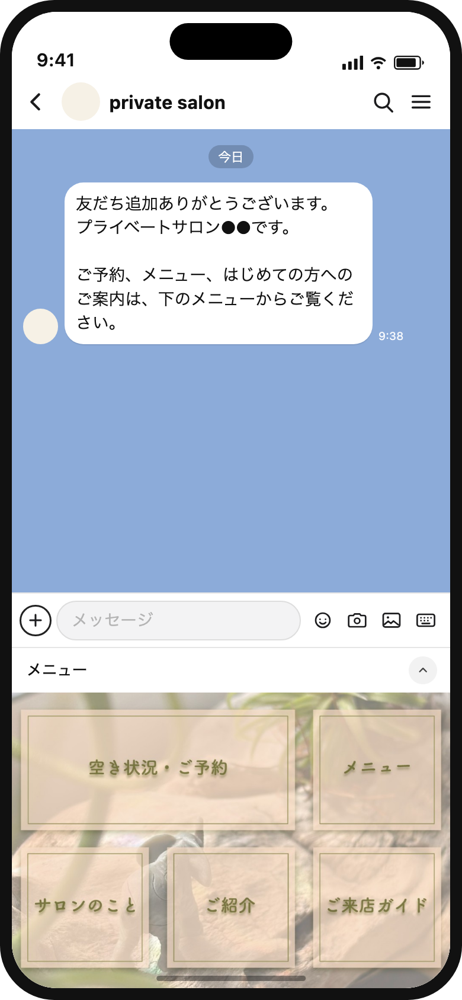
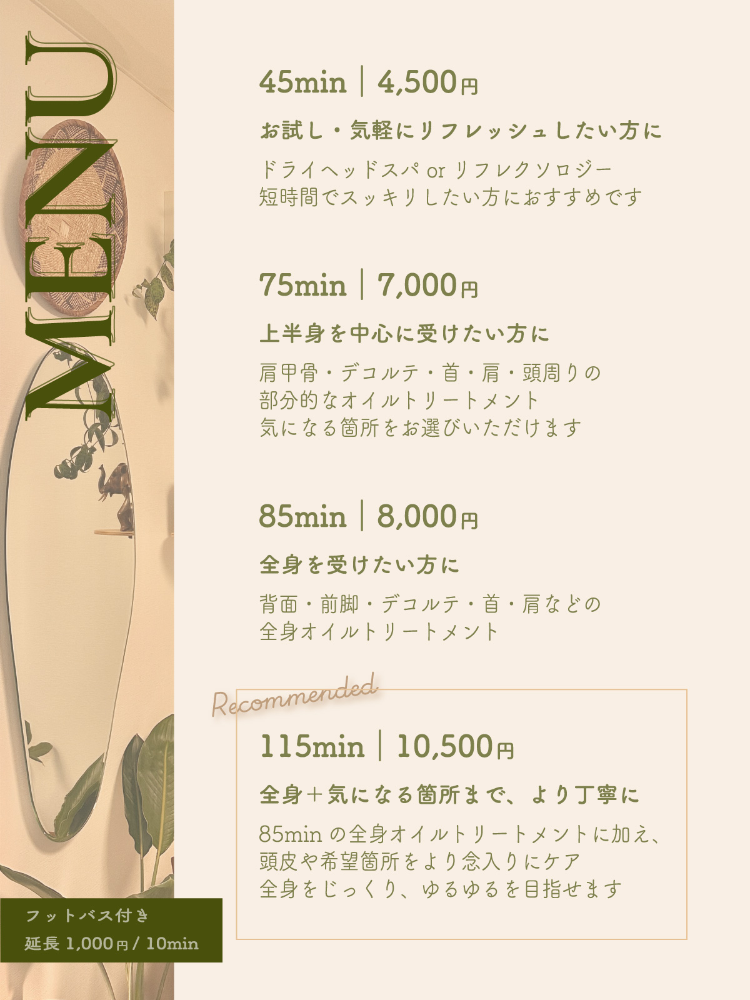
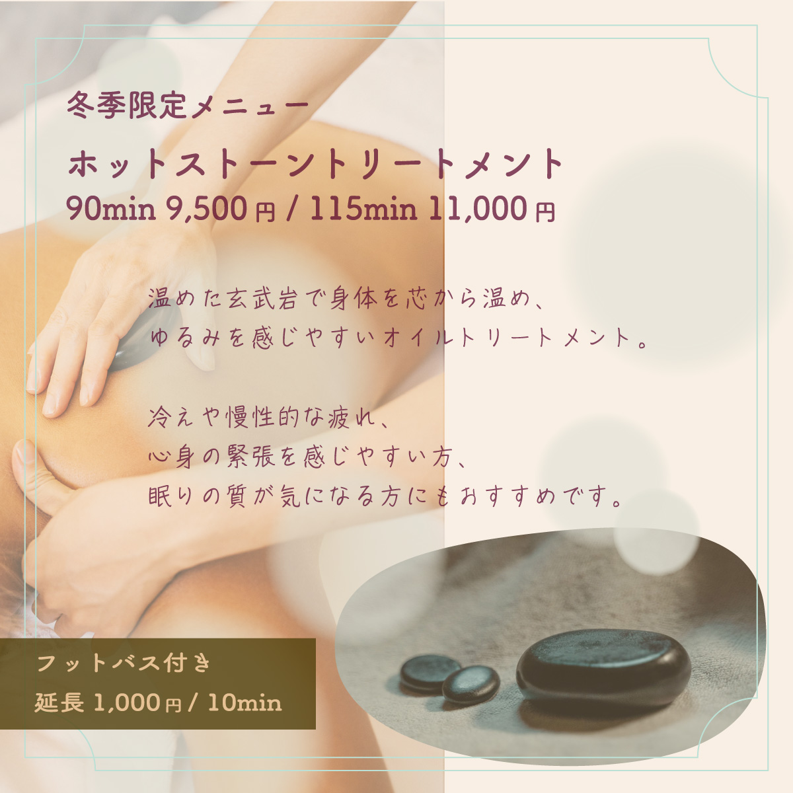
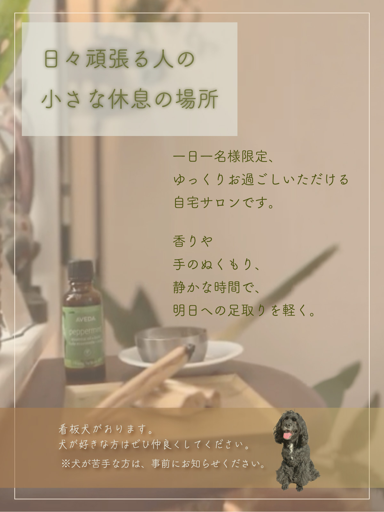
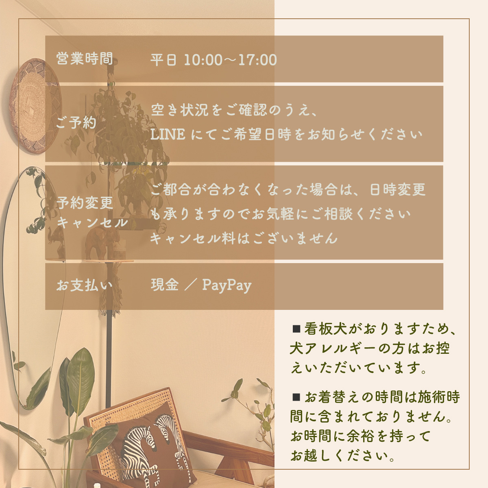
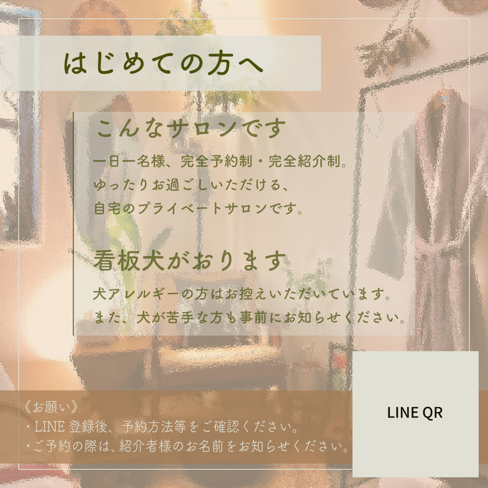
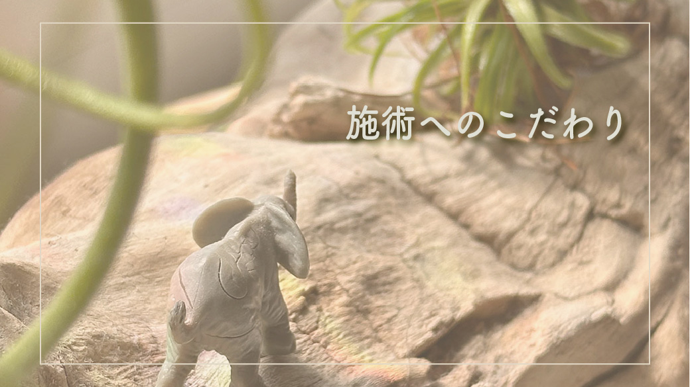
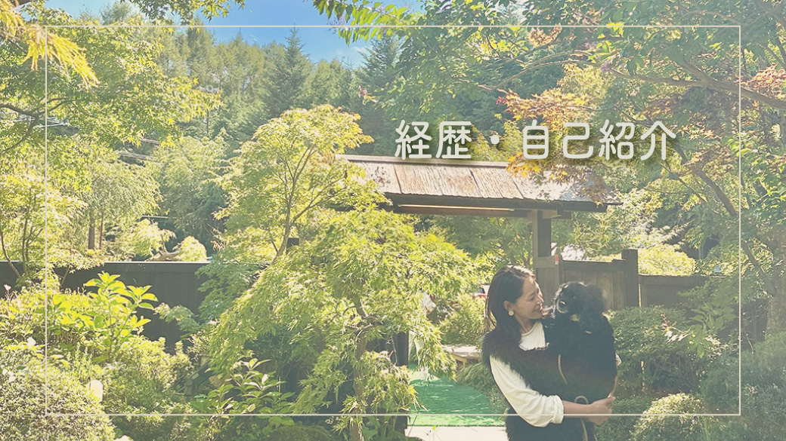

情報整理
ご相談・ヒアリング内容から情報の優先順位を整理。
WORKS








※個人情報に触れないもののみ掲載
世界観と実用性を両立するLINE設計
ご相談・ヒアリング内容から情報の優先順位を整理。
利用者がLINEで必要な情報にたどり着きやすいよう、整理した情報を5つの入口に再構成。
制作物を決める段階でクライアントに利用イメージを持っていただき、使い勝手を検討。
概要
プライベートサロンのLINE公式アカウントのリニューアルに伴い、情報設計からビジュアル制作までを担当。
利用者様にとっての情報の探しやすさに加え、サロン側の運用方法も考慮しながら、LINE上での情報の見せ方を検討。
対象となるお客様
デザインの意図
リッチメニューは5分割のオリジナルレイアウトとし、余白を活かしてサロンのゆったりとした雰囲気を表現。
予約やメニューなどの実用的な情報と、サロンの雰囲気や施術へのこだわりを伝える情報を整理し、目的に応じて選びやすい構成に。
また、各ビジュアルにも役割を持たせ、情報を詰め込むのではなく、必要な情報を心地よく確認できる見せ方を目指した。